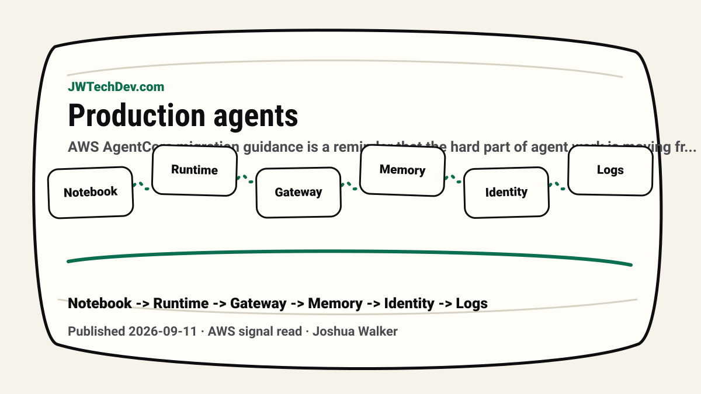

A notebook agent is not a production agent
AWS AgentCore migration guidance is a reminder that the hard part of agent work is moving from a local demo into runtime, gateway, memory, identity, guardrails, logs, and ownership.

Quick answer
A notebook agent becomes production-ready only when the runtime, identity, tool access, memory, guardrails, observability, cost, and ownership model are designed around it. The model is not the system. The operating layer is the system.
The useful signal
AWS framed AgentCore as a migration path from notebook or demo agents into production operations. That is the right conversation. A working loop in a notebook proves an idea can respond. It does not prove the idea can survive users, permissions, sessions, retries, monitoring, or change.
For builders, the lesson is simple: stop treating the prototype as the product. The prototype is the sketch. Production is where the system earns trust.
What changes in production
Production agent work introduces boring questions that become very expensive when ignored. Where does the agent run? How are sessions isolated? How is state carried across turns? Which tools can it call? Which credentials does it use? Who can approve risky actions? Where do traces and logs land?
AWS highlights Runtime, Gateway, Memory, Identity, policy, guardrails, VPC configuration, WAF rules, IAM policies, and secrets rotation as separate concerns. That separation matters because agent reliability is not one setting. It is an operating model.
The local demo trap
A local demo is allowed to be fragile. It can use one user, one dataset, one environment variable, and one happy-path workflow. A production path cannot live like that.
If an agent only works on your laptop, it is not deployed. If nobody knows the IAM boundary, it is not governed. If nobody can see traces or logs, it is not observable. If nobody owns the runbook, it is not operational.
The builder checklist
Before calling an agent production-ready, ask whether it has a runtime boundary, scoped identity, tool policy, memory policy, observability, cost visibility, rollback behavior, and a human approval path for high-impact actions.
That is not overengineering. That is the minimum translation from interesting AI behavior into infrastructure someone can actually support.
JWT read
The headline is not “use this one AWS service.” The headline is that cloud discipline is entering agent work. The builders who win will understand the model, but they will also understand the operating layer around the model.
That is why AWS keeps showing up in this lane for us: it gives learners a concrete way to talk about runtime, identity, networking, logs, guardrails, and cost without pretending a prompt is the whole architecture.
Sources checked
Want the starter kit?
Grab the free JWTechDev.com starter kit if you want a practical way to connect AWS, AI workflows, and approval gates.
Get resources